肿瘤早诊的思路

Contents
全国临床分子诊断技术及其规范化应用高峰论坛，听了邵建永的讲座，有一些启发，总结一下：
肿瘤早诊的思路
1）做早诊，而不是早筛
2）开始用粪便做结直肠癌，用尿液做膀胱癌，取材是跟肿瘤有直接接触 ，而且比血更无创
3）甲基化不但做膀胱癌早诊，还做膀胱癌的复发检测
4）就一个基因Twist1，用qPCR，比较简单
5）他们就围绕自然腔道来做早诊，其它肿瘤在进行中
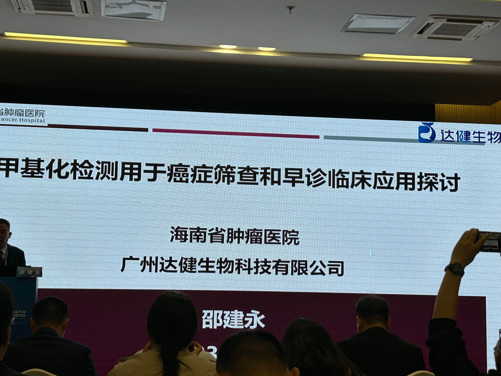
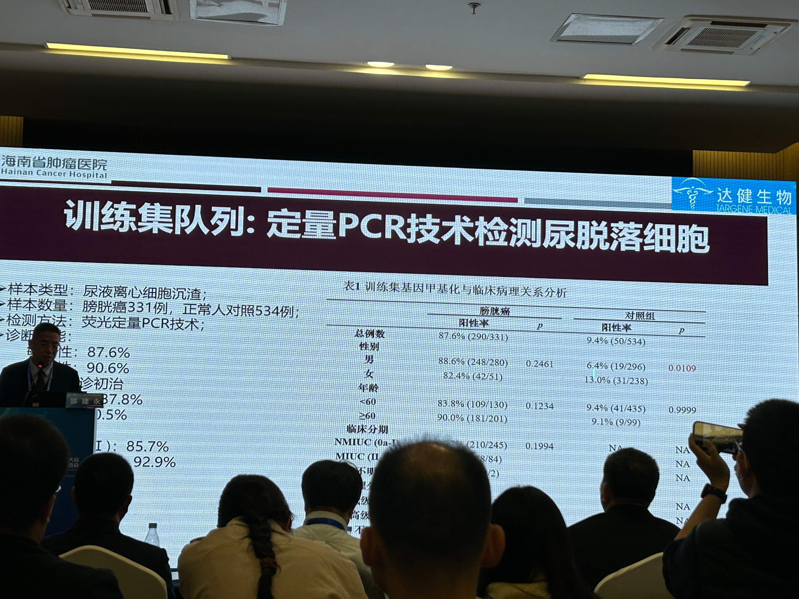
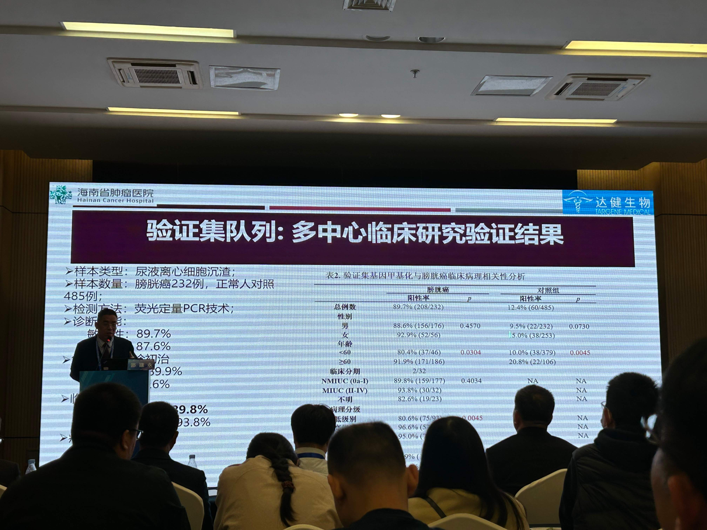
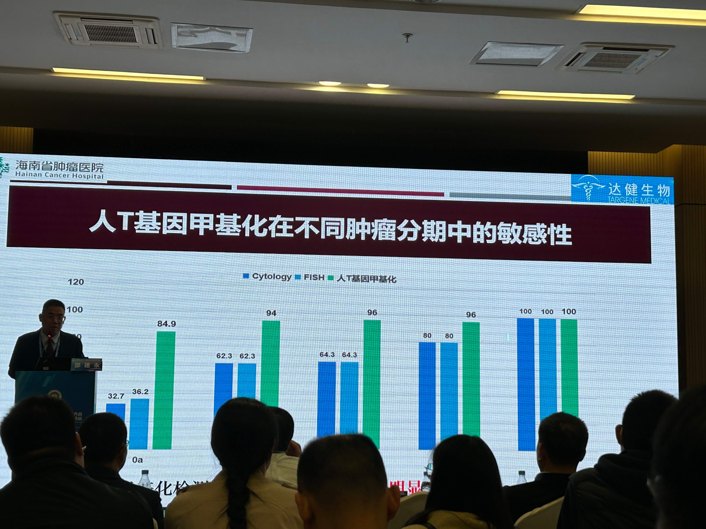
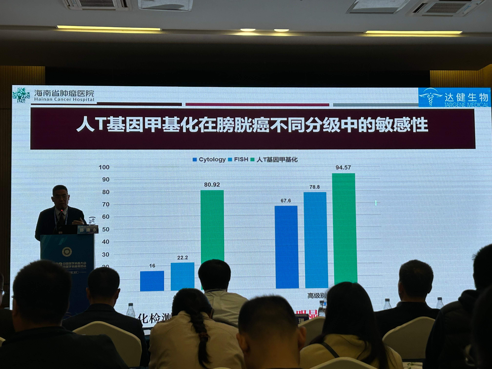
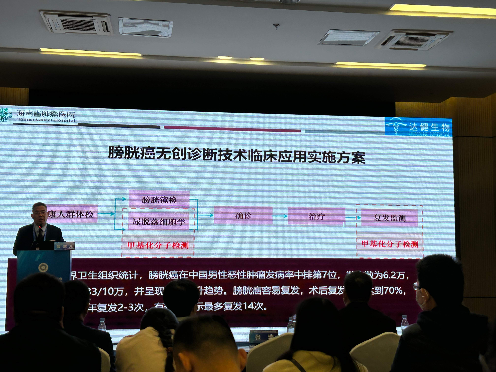
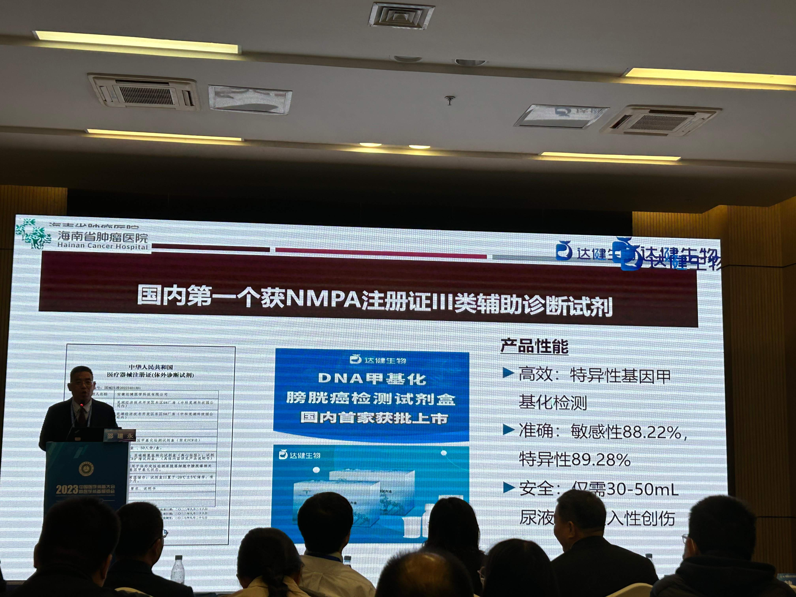
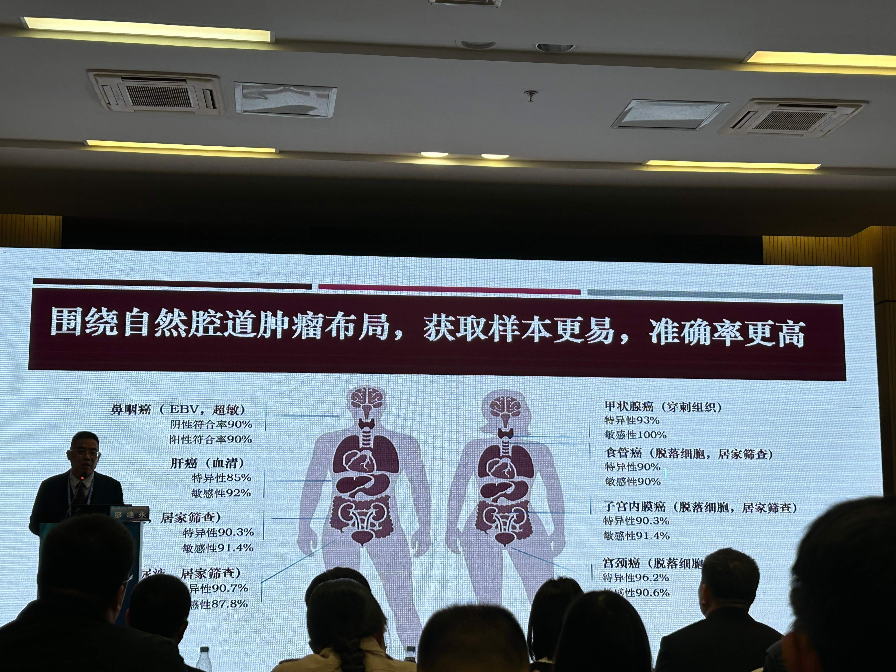
达健Twist1甲基化试剂盒的审评报告：
人Twist1基因甲基化检测试剂盒（荧光PCR法）（CSZ2000297）
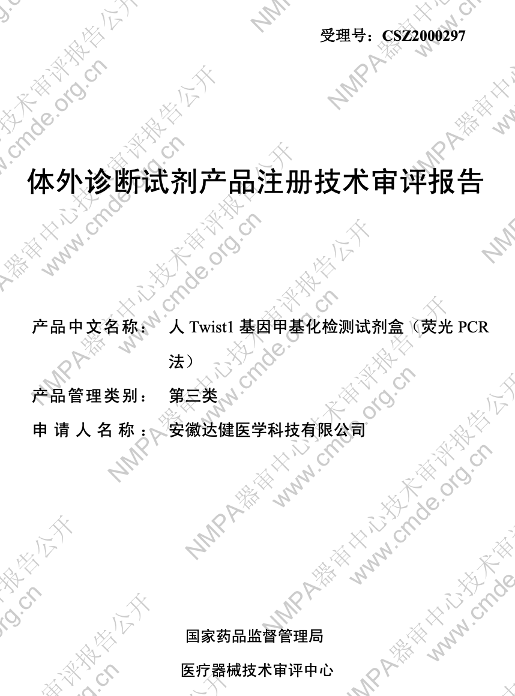
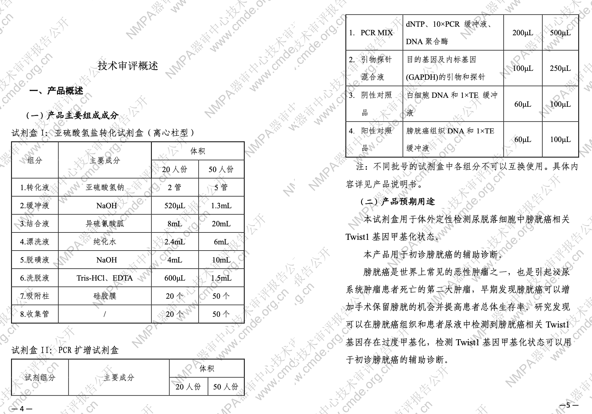
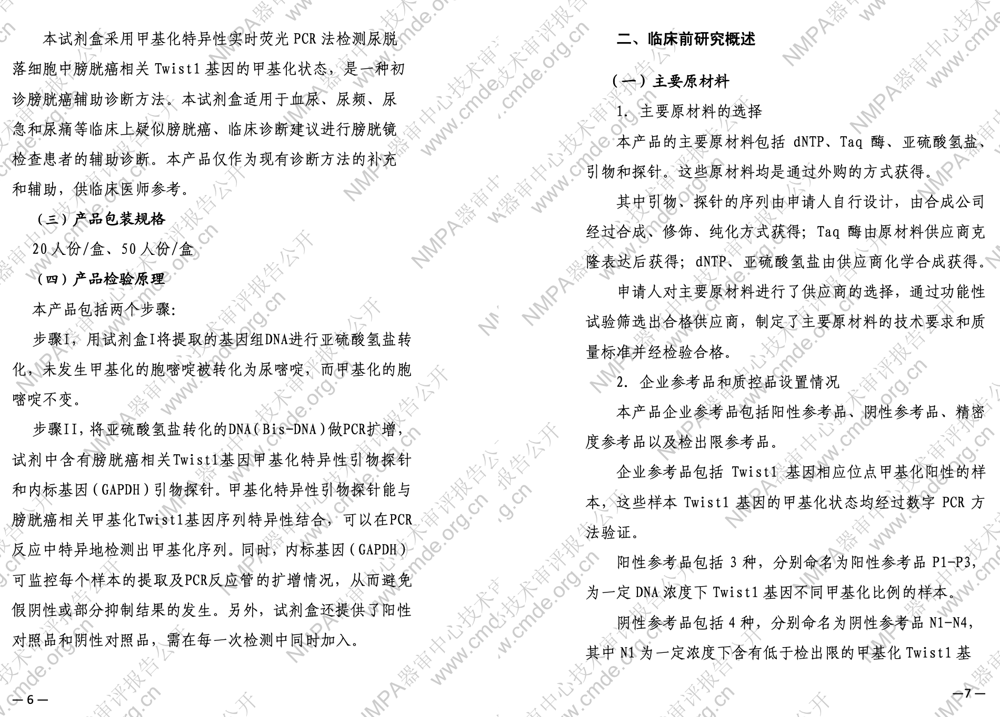

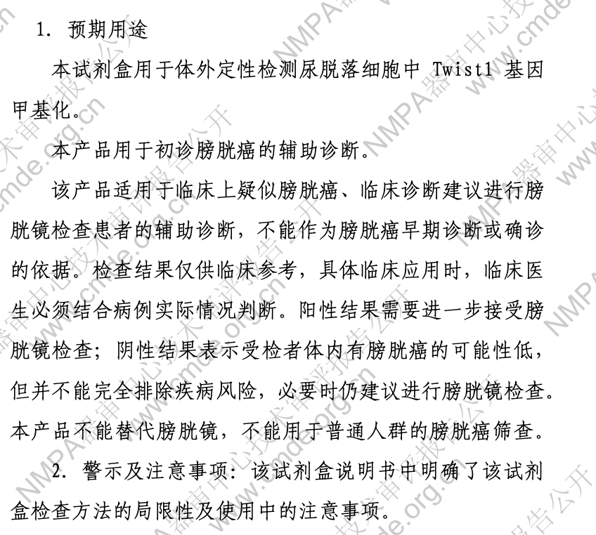